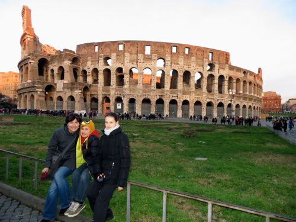
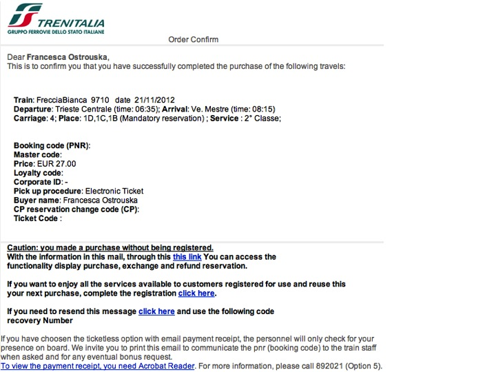
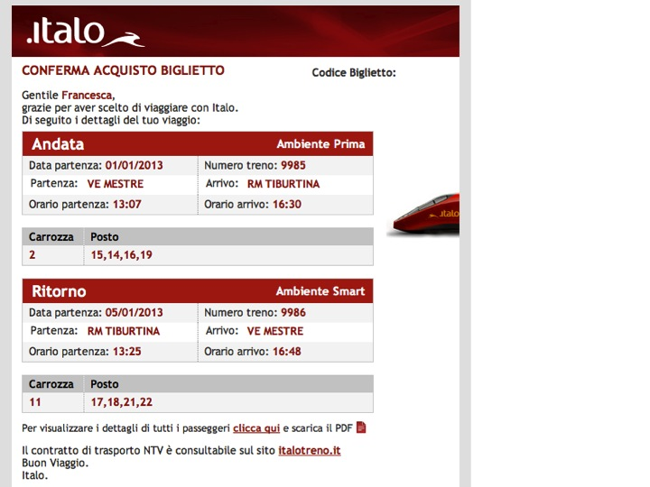
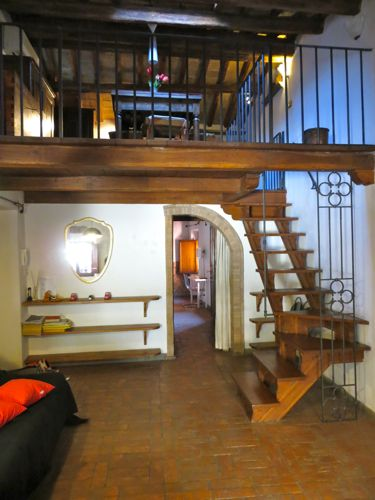
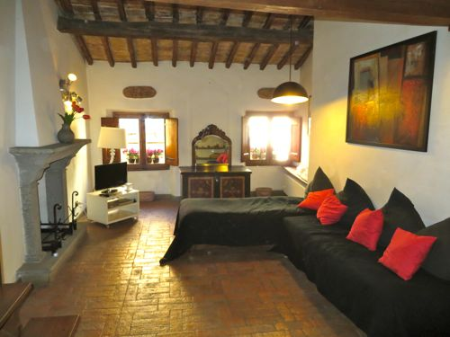
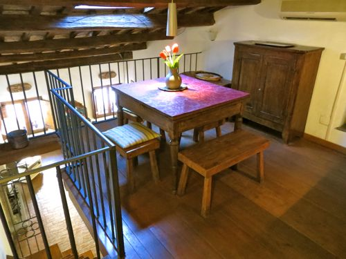
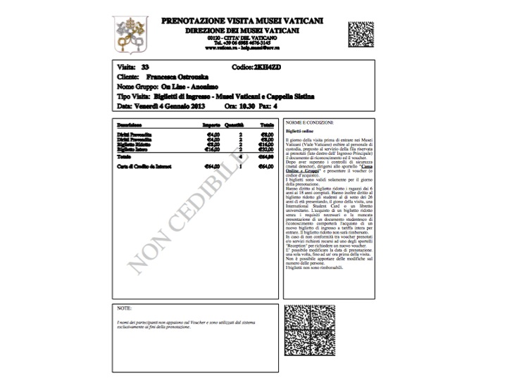

During the Christmas holidays, I decided to take the kids to visit a friend of mine in Latina, located a few kilometers south of Rome. Obviously, being so close to the Eternal City, we spent two nights in the Capital as well. The interesting thing about our trip though, was the fact that I didn't bring one single piece of paper with me, since all the tickets I had were electronically stored in my iPhone, more exactly in my Dropbox account. First the train tickets: we took a Trenitalia train from Trieste to Venezia and then its private competitor Italotreno from Venezia to Rome. Trenitalia sent me both a text message and an email with the confirmation code:
Once onboard, the train attendant simply entered the reservation code in their mobile check-in device. Same thing for Italotreno, which sent me a PDF file via email:
As for a place to stay, I used Venere for my search and found a beautiful B&B near the Coliseum: the Relais Rome Sweet Home. And as for the examples above, I got an email with a reservation code and additional details that I transferred to my iPhone.
We stayed in a 4th floor suite, a beautiful apartment with the kitchen on the loft...
...terracotta floors and...
...exposed wood beamed ceilings. We loved staying here, the location was fantastic and staying in a XV century building really completed our Roman experience. Last paperless ticket was the one I purchased to visit the Sistine Chapel.
This is something any tourist who is planning to visit the Sistine Chapel and the Vatican Museums (and/or any other important museum) should do. The line outside the entrance was incredibly long (and slow), but with our prepaid ticket, that they scanned directly from my iPhone, we got in extremely fast. Overall, a pleasant and efficient experience that saved us time and trees. If you are planning to take public transportation in Italy, consider purchasing our newly released eBook that covers in great detail how to take advantage of trains, ferries, cabs and planes to move around the country.